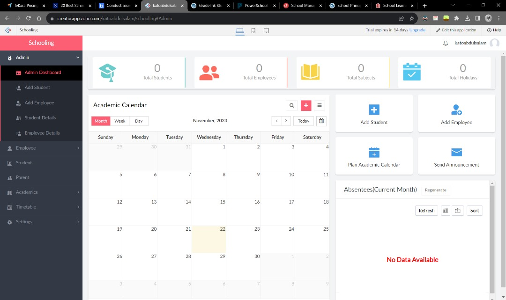
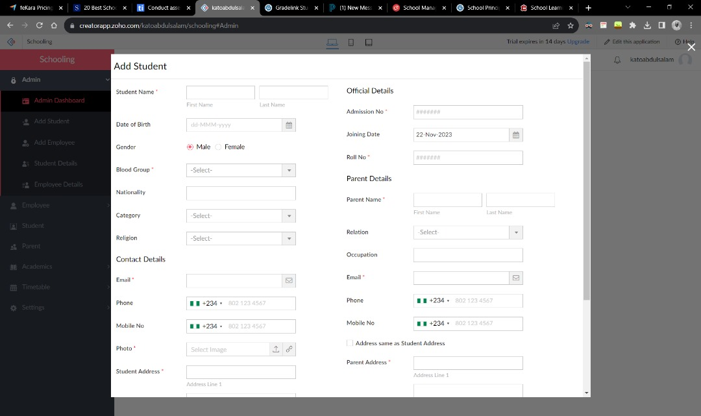

Project Overview
The School Management System was developed as a team project to create a centralized system for managing school-related information.
The system focuses on organizing information relating to students, teachers and school staff while providing functionality for managing the data efficiently.
My primary contribution to the project was working on the backend using Java.
Key Features
Student Management
Stores and manages information relating to students.
Staff Management
Allows school staff information to be organized and managed.
Teacher Management
Provides functionality for managing teacher information.
Backend Architecture
Java-based backend functionality for managing application data.
Project Gallery

What I Learned
This project gave me practical experience working within a development team and applying object-oriented programming concepts in Java. It also helped me understand how backend functionality interacts with application data and how software components can be organized into a larger system.